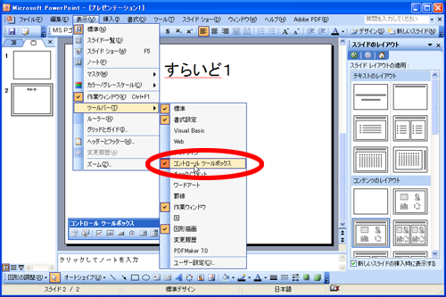
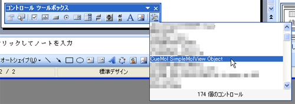
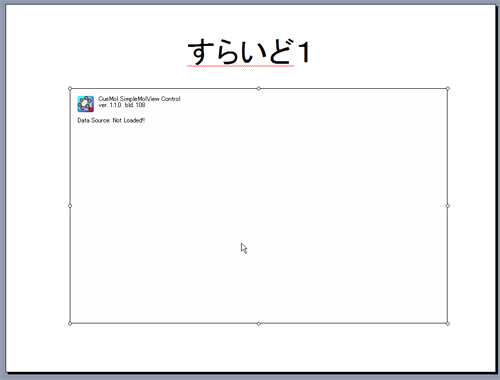
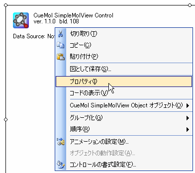
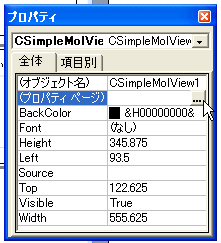
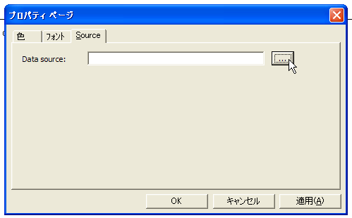
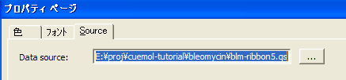
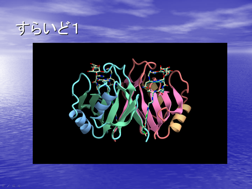
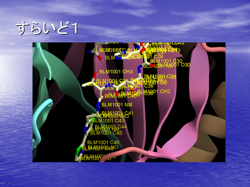
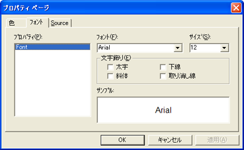

PPT
PowerPointでCueMol controlを使う¶
PowerPoint等の ActiveX controlの埋め込みに対応しているアプリケーションで， CueMol controlを使うことができます．
ここでは，PowerPoint (Micorosoft Office Professional Edition 2003)を 例に説明しますが，ほかのアプリでも（ActiveXに対応していれば） 大体同じような方法で使えるかもしれないです．
表示したいシーンの作成¶
まず，PowerPointのスライド中で表示したいシーンを用意します．
手順としては，以下の2とおりが可能です．
- QScriptを使って，普通に図などを作るのと同じ手順で作成．Documents/QScriptのチュートリアル参照．
- GUIを使って作成，dump sessionを行なって.queファイルを作る．Documents/GUIのチュートリアル/StepA4参照．
ともかくも，スクリプトあるいはダンプを読み込んだら， 分子の図が見せたい方向と大きさで出るようにしておくわけです．
ここでは例として， Documents/QScriptのチュートリアル/Step3 のblm-ribbon5.qsを使うことにします．
PowerPoint側での準備¶
次に，PowerPointのほうで，コントロール ツールボックスを表示しておきます． PowerPointのメニューの，「表示」→「ツールバー」→「コントロール ツールボックス」です．

つぎに，埋め込みたいスライドのページを表示させ， コントロール・ツールボックスの，「コントロールの選択」ボタンを クリックします． すると，以下のようにインストールされているActiveXコントロールの一覧が 出てきますので，その中から「CueMol SimpleMolView Object」を選択します．

マウスカーソルが「＋」の形になるので， 四角形を描くのと同じ要領で，コントロールを配置したい場所で， マウスを左ドラッグします． すると，以下のようにコントロールが配置され， CueMolのアイコンやバージョン情報などが出てきます．

表示するスクリプトを指定する¶
コントロールの領域に，表示するデータがロードされていない旨が表示されていますが，これからデータのソース（スクリプト）を指定します． コントロールの領域で右クリックをすると，以下のようなコンテキストメニューが 表示されるので，その中から「プロパティー」を選びます．

プロパティーウィンドウが表示されるので， 「(プロパティ ページ)」と書かれている項目をクリックし， 右側に出てくる「...」ボタンをクリックします．

つぎに，プロパティーページのダイアログが出てくるので，「Source」タブの Data sourceという項目のところに， 表示したいスクリプトファイルのパス名を指定します． 右の「...」ボタンを押すと， ファイル選択ダイアログが出るようになっています．

ファイル選択ダイアログで，スクリプトファイルを選んで「開く」ボタンを押すと， 以下のようにテキストボックスのところに スクリプトのパス名が入ります．

プロパティーページの「OK」ボタンを押せば完了です．
スライドショーの実行¶
プロパティーページの「OK」ボタンを押すと， コントロール領域に設定したファイル名が表示されます． スライドショーを実行すると，コントロール領域に分子が表示されます． CueMolでスクリプトを実行したときと同じ表示になっていると思います．

CueMolコントロールの操作¶
スライドショーを実行している時に， コントロール領域（上の図の黒い矩形部分）でマウスを左ドラッグすると， 分子の表示を回転させることができます． また，右ドラッグで平行移動になります． マウス操作は，アプリ版CueMolの分子ビューでの操作と同じです(Documents/GUIのチュートリアル/Step2参照)． ただし，クリックで原子情報を表示させたり， コンテキストメニューを出したりは，できません．
あと，マウスでコントロールを操作（分子を回転させたり）した後は， キーボードの入力フォーカスがコントロールに移った状態になっています． なので，キーボードからspaceキーやback spaceキーを押しても， CueMolコントロールにキー入力が取られてしまい， スライドを進めたり戻したりすることができません． コントロール領域外をクリックすることで， 入力フォーカスがPowerPoint本体に戻り， キー操作でスライドを進めたり戻したりすることができるようになります．
プレゼンテーションの時に，スライドを進めたり戻したりするのを キーボードからやっている人は，このことを知らずに使うと はまってしまう（次のスライドに行けない）かもしれませんので， 注意してください．
その他もろもろ¶
原子情報の表示¶
上述のように，CueMolコントロールでは， マウス クリックで原子情報ラベルを表示させることができませんが， スクリプトのほうで指定しておくことで， はじめからラベルが表示された状態にしておくことができます．
... (省略) ...
$r_blm = $mol.createRend("blm", "ballstick");
$r_blm.setProp("sphr", 0.2);
$r_blm.setProp("bondw", 0.2);
<!!!!!!>
$mol.showAtomLabel(se/_.1001.S53/, "mylabel1");
<!!!!!!>
gfx.setCenter($r_p.getCenter());
$molオブジェクトの，showAtomLabel()メソッドを呼び出すことで， 原子ラベルを表示させることができます． showAtomLabel()メソッドの引数・使用方法は以下のとおりです．
-
第一引数には，分子選択を指定します．上の例ではBLM1001残基のS53原子に ラベルが出るようになっています． 複数原子を選択するような文を指定すると， 選択されている原子全てについてラベルが表示されます． ただし，namelabelレンダラーのほうにmaxlabelプロパティー*というのがあり， それ以上は同時にラベルが表示されないようになっています． デフォルト値は5になっていますので， たくさん表示したい場合は，前もってこのプロパティーを 大きく設定しておかなければなりません．
-
第二引数には，レンダラー名（レンダラーのタイプ名ではない）を指定します． 指定した名前のレンダラーがすでに存在していれば， （そのレンダラーがnamelabelの場合に限り）同じレンダラーが再利用されます． なかった場合は，新しくnamelabel型のレンダラーが作られます． この引数でラベルごとに違うレンダラーにしておけば， 後でまとめてプロパティーを指定したりすることができます．
ラベルの制限以上にたくさんラベルを出したい場合は，上に書いたとおりにやれば できるのですが，具体例があったほうがわかりやすいので，以下に示します．
... (省略) ...
$r_blm.setProp("bondw", 0.2);
<!!!!!!>
$rlabel = $mol.createRend("mylabel1", "*namelabel");
$rlabel.setProp("maxlabel", 100);
$mol.showAtomLabel(se/_.1001.*/, "mylabel1");
<!!!!!!>
gfx.setCenter($r_p.getCenter());
この例のように変更して実行すれば，残基番号1001の残基の原子 全てにラベルが表示されるようになります． maxlabelプロパティーを変更していないと，最後の５原子しかラベルが出ないわけですが， 100にしているので，100個までなら一度に出るというわけです．

ラベルの色や透明度なども，プロパティー（color）で変えられます． 同時に複数の色のラベルを使いたい場合は，色毎にレンダラーを別にして， それぞれプロパティーを指定して色を変えればOKです．
セッションのダンプファイルを使う場合は， クリックしてラベルが表示された状態でダンプを作成しておけば， ダンプを読み込んだときにもラベルが表示された状態になります．
フォントの設定¶
デフォルトのフォントでは， プレゼンテーション用には字が小さいかもしれません． 実は，上の例ではすでに使っているのですが， ラベルのフォントを変えることができます．
コントロールのプロパティー ページ（上記のスクリプトの指定を参照）で， 「フォント」というタブを選択すると， フォントの設定に関する項目が出てきますので， そこでラベルに使用したいフォントを指定します．

現バージョン(build 108)では，fontを変更しようとしたときに， 「不正なプロパティーです」のようなエラーが出るときがあります（バグ）． いったん保存してからPowerPointを再起動して もう一度やればうまくいくみたいです．